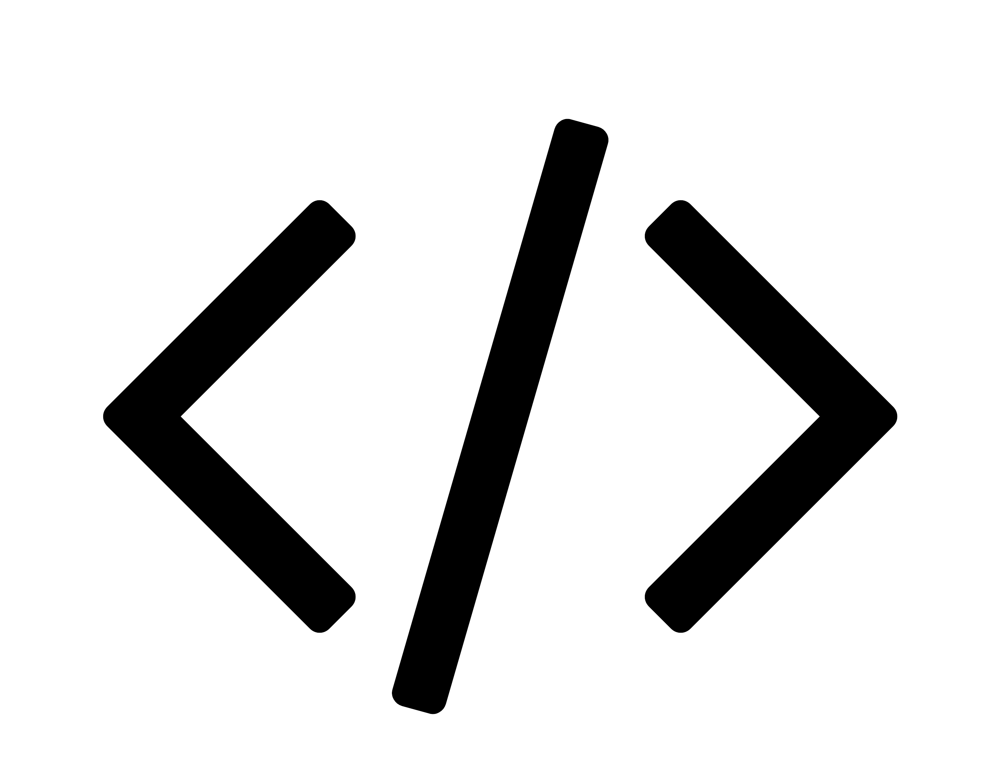

Datos que orientan
Entiendo los números antes de escribir código. Los datos no son el producto — son el mapa.
Entiendo los números antes de escribir código. Los datos no son el producto — son el mapa.
Desarrollo con buenas prácticas y atención al detalle. Me importa el cómo, no solo el qué.
Escucho a las personas que van a usarlo. El mejor sistema es el que alguien elige usar.
“Trabajo con la tecnología, el diseño y la lógica. Me gusta entender el problema primero y encontrar la forma más clara de convertirlo en una solucion que las personas quieran usar.”
- Vanessa
Desde sitios institucionales hasta plataformas a medida, funcionales y escalables.
Apps nativas o híbridas, con interfaces limpias, reactivas y funcionales, conexperiencia de usuario optimizada.
Visualización de métricas y análisis de datos en tiempo real, con paneles interactivos y personalizables. Transformo datos en información útil para tomar decisiones informadas.
Hay una idea.
Hay un problema.

Construimos algo.
Proyectos reales con código real. Expandí cada uno para ver el proceso completo.
Módulo de Experiencia del Usuario Final
Python Streamlit HTML5 CSS JavaScript GitHub Pages → Ver proyectoPrimera App Móvil en React Native
React Native Expo Snack JavaScript React Hooks → Ver proyectoMLOps — Henry PI Nº1
Python Pandas Scikit-learn (KNN) FastAPI Render → Ver proyectoNo llevo veinte años programando — llevo veinte años resolviendo, sosteniendo procesos y adaptándome a cada rol que la vida me pidió. Hoy aplico esa metodología a construir apps e interfaces: pienso, diseño, programo, analizo y colaboro — combino una mente analítica capaz de resolver problemas complejos con la paciencia milimétrica de quien domina un oficio manual.
- ¿Por qué desarrollo si mi formación original es en ciencia de datos?
Porque los datos y el código son parte del mismo problema: entender algo y construir una solución. Mi background en análisis me da una mirada más completa a la hora de desarrollar.
- ¿En qué etapa profesional te encontrás?
Estoy consolidando mi segunda etapa profesional, trasladando dos décadas de experiencia en gestión de procesos y datos sensibles hacia la construcción directa de software. No soy junior en responsabilidad ni en criterio.
- ¿Cuál es tu diferencial si no tenés 10 años como desarrolladora?
La reducción de riesgo. Aporto autonomía, comunicación fluida con stakeholders, resolución bajo presión y un criterio de datos que permite entender el negocio detrás del código.
- ¿Cómo te integrás a un equipo de trabajo existente?
Con hábito de trabajo colaborativo, uso fluido de control de versiones (Git) y facilidad para adaptarme a estándares de código establecidos.
- ¿Aceptás trabajos pequeños o solo proyectos grandes?
Depende del problema, no del tamaño. Un script que automatiza algo crítico puede valer más que una aplicación entera. Me interesa que la solución sea la correcta.
Contame tu idea, tu desafío o simplemente conversemos. Me encantan las buenas conversaciones que terminan en grandes cosas.
Hablemos